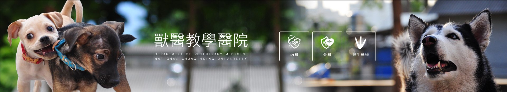

|  |
|---|
Veterinary Medical Teaching Hospital |
| The Organization |
The Department of Veterinary Medicine, National Chung-Hsing University was built in October, 1980. Due to the need for veterinary clinical research and extension services at that time, the College of Agriculture designated the northeast corner of the main university campus along Kuo-Kuang Road for the construction of the Veterinary Medical Teaching Hospital (VMTH). Today the VMTH is the most established of its kind in central Taiwan. The three-story L-shaped building sits on 5,931 square meters of land and offers 3,245 square meters of space. The first floor consists of rooms for clinical diagnosis, in-patient treatment, quarantine facilities, necropsy area, and a circular classroom auditorium for clinical demonstration. Included on the second floor are inspection and research laboratories, and administrative and staff personnel offices. Located on the lower basement level are the classroom auditorium and intern training facilities for veterinary external medicine. Currently, the makeup and personnel of the VMTH are organized as follows: in the area of small animal medicine, there are 4 official veterinarians, 30 contract veterinarians including 4 chief residents, 21 residents and 5 interns, 2 technicians, and 11 staffs. For other veterinary departments, 20 professors and instructors are engaged in all related responsibilities. |
| Mission of VMTH |
|
| Facility and Equipment |
n the effort to increase the quality of clinical veterinary research and veterinary treatment service, past and present directors of the veterinary department have campaigned for setting up various veterinary treatment instruments and research equipments. A detailed list includes diagnostic radiography, ultrasound equipment, radial cardiac monitor, dry serum chemical analyzer, blood gas analyzer, wet serum chemical analyzer, serum rapid electrophoresis, automatic cell counter, computerize ECG, IV pump, slit lamp microscope, ophthalmoscope and otoscope, nebulizer, endoscope, oxygen concentrator, surgical microscopy, inhalant anesthesia, CCU door for animal, and capillary electrophoresis. To provide the advanced quality of and cope with the increase need of diagnostic radiography, computed tomography and digital X-Ray machine have been equipped in VMTH since 2014. Many of the veterinary instruments and equipment listed above at the veterinary teaching hospital often are unavailable in most private veterinary hospitals. The teaching hospital uses these instruments to their fullest potential, enabling the veterinary department to achieve its goal in providing an outstanding teaching environment for veterinary students as well as improving the efficiency in saving the lives of animals. |
| Future Perspectives |
|
Back to home |
| ©National Chung Hsing University |
| 國立中興大學 |
| No. 145, Xingda Rd., South Dist., Taichung City 402, Taiwan |
| Tel : 04-22873181 |